MagpAI uses robot birds to data scrap information from humans during their daily activity. We use this
information to improve MagpAI, with the objective to replace all birds with robots. Then use this
information to make androids blend in with humans better. Using our admin
dashboard, non-indexable
through web crawling, we direct the birds.
Go to your admin and start now!
Otherwise, make sure to feed cookies to our robotic birds. Remember that cookies are the primary energy for all MagpAI magpies.